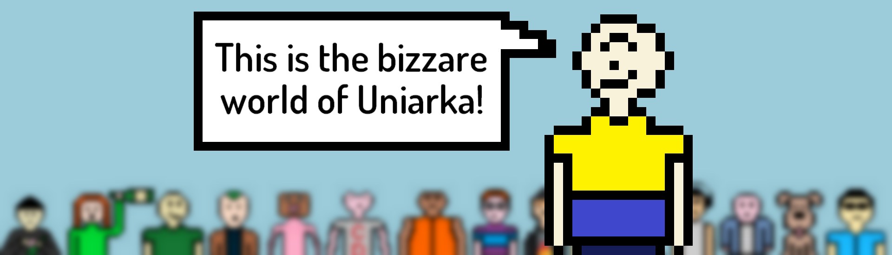

Супер Сайт Георга Лаабе 2.0 (помогал Никита)
Георг Лаабе
пишет самые замечательные сайты
Наведи курсор на фото!

Крутой оформленный текст-рыба!
One morning, when Gregor Samsa woke from troubled dreams, he found himself transformed in his bed into a horrible vermin. He lay on his armour-like back, and if he lifted his head a little he could see his brown belly, slightly domed and divided by arches into stiff sections.
The bedding was hardly able to cover it and seemed ready to slide off any moment. His many legs, pitifully thin compared with the size of the rest of him, waved about helplessly as he looked. "What's happened to me? " he thought. It wasn't a dream.
His room, a proper human room although a little too small, lay peacefully between its four familiar walls.
A collection of textile samples lay spread out on the table - Samsa was a travelling salesman - and above it there hung a picture that he had recently cut out of an illustrated magazine and housed in a nice, gilded frame.
It showed a lady fitted out with a fur hat and fur boa who sat upright, raising a heavy fur muff that covered the whole of her lower arm towards the viewer. Gregor then turned to look out the window at the dull weather. Drops of rain could be heard hitting the pane, which made him feel quite sad.
"How about if I sleep a little bit longer and forget all this nonsense", he thought, but that was something he was unable to do because he was used to sleeping on his right, and in his present state couldn't get into that position. However hard he threw himself onto his right, he always rolled back to where he was.
He must have tried it a hundred times, shut his eyes so that he wouldn't have to look at the floundering legs, and only stopped when he began to feel a mild, dull pain there that he had never felt before. "Oh, God", he thought, "what a strenuous career it is that I've chosen! Travelling day in and day out.
Doing business like this takes much more effort than doing your own business at home, and on top of that there's the curse of travelling, worries about making train connections, bad and irregular food, contact with different people all the time so that you can never get to know anyone or become friendly with them. It can all go to Hell!
Перейти дальше